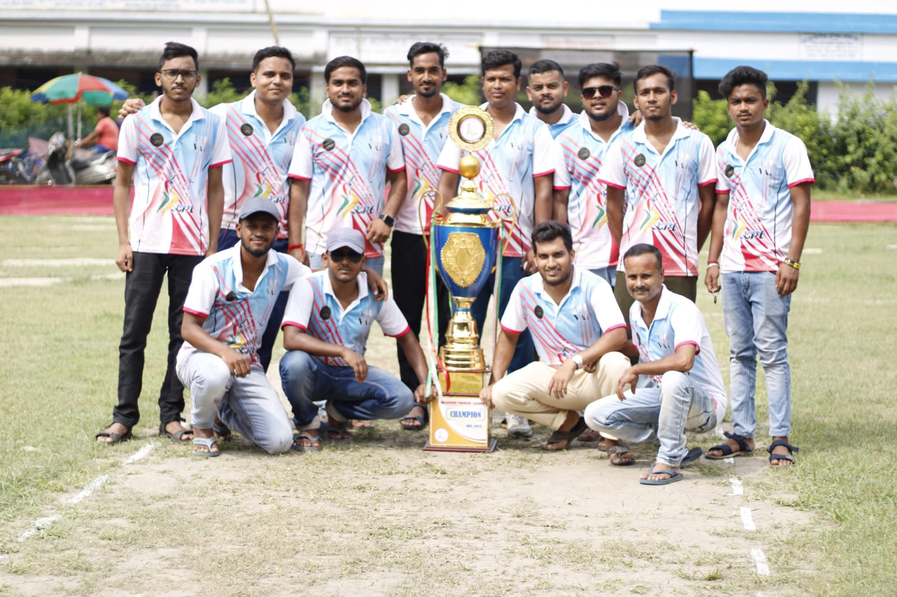

Hold your nerves, Rregistration portal is going to go live very soon.

About US
A group of young boys from Kashipur and Tunighata took the initiative to organise a franchise-based short-hand flash ball cricket tournament named the Kashipur Premier League in 2017. In Madien's year, Crazy Boys, one of the successful franchises, beat BBSS in the final and lifted the first trophy. Due to some unavoidable circumstances, KPL was postponed in 2018 and 2019. In 2020, which was unfamous due to COVID-19, a group of boys from Kashipur, in collaboration with Jonaki Sangha, took another initiative to revive the game and brand value as well as the name of the tournament, and they did it. In 2020 season 2, RSS, which was also a successful franchise, beat CB in the final and lifted the trophy. In 2021, in season 3, CB beats RSS in the final. Season 4, 2022, saw a new franchise as well as a new winner named ABBYS, who beat HDDF in a close encounter. After successfully completing four seasons, we are heading towards season 5, jointly organised by Jonaki Sangha and the KPL core team. Season 5 will be much bigger and happening; 10 teams are going to take part in this edition. This year, we have three new teams. Team A,Team B, and Team C, and seven old franchises 11 Sparatan (the oldest and only team since 2017), Mad Max (the team since 2020), RSS (the team since 2020), Rising Star (the team since 2020), Kalpotori (the team since 2021), ABBYS (the team since 2022) and Kashipur (the team since 2022).